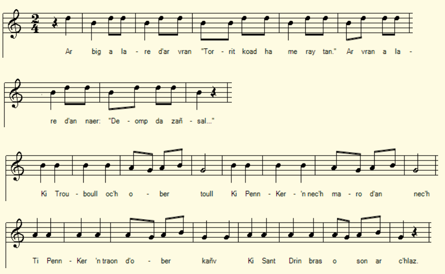

Pater Noster
Chant tiré du 2ème Carnet de collecte de La Villemarqué (pp. 286 - 287).
Mélodie
Arrangement Christian Souchon (c) 2021
|
A propos de la mélodie Inconnue. Toutefois, si ce chant est une parodie des Vêpres des grenouilles (Gousperoù ar Raned) (cf. notes), on peut lui assigner pour timbre l'une des mélodies qui accompagnent cette pièces: 1° N. Quellien; 2° Marguerite Philippe (enr. F. Vallée); 3° Y. Menguy; 4° Guillou (enr. Y. Le Moal). La partition ci-dessus utilise la mélodie N°1, qui distingue 2 parties: les strophes 1 à 6 d'une part, la strophe 7 avec ses rimes internes (boull/ toull, traon/kañv... ) d'autre part. A propos du texte On connaissait à ce jour 2 versions (et 2 occurrences) de ce chant facétieux, repéré dans la classsification Malrieux sous le N° M-00471 et le titre "Pater noster debidore" (cf. site tob.kan.bzh). Il s'agit de l'enterrement d'un chien auquel assistent d'autres chiens. |
About the melody Unknown. However, if this song is a parody of Vespers for the Frogs (Gousperoù ar Raned) (cf. notes), we can assign it as a vehicle one of the melodies which accompany said "Vespers": 1 ° N. Quellien; 2 ° Marguerite Philippe (enr. F. Vallée); 3 ° Y. Menguy; 4 ° Guillou (enr. Y. Le Moal). The above score uses melody No.1, which distinguishes 2 parts: stanzas 1 to 6 on the one hand, stanza 7 with its internal rhymes (boull / toull, traon / kañv ...) on the other hand . About the lyrics We know to date 2 versions (and 2 occurrences) of this facetious song, referred to in the Malrieux classification under the N ° M-00471 and the title "Pater noster debidore" (cf. site tob.kan.bzh). It's about the funeral of a dog attended by other dogs. |
Pater Noster, Carnet N°2, p. 286 - 287
|
p. 286 - 23 mai 1892 (Mari an Talec à Vannes (52 ans) (Douar Gwenet en Kemperle) 1. Ar big a lare d'ar vran: - Torrit koad ha me ray tan. - 2. Ar vran a lare d'an naer - Deomp da zañsal, ma c'hoar ger. - 3. An naer 'lare d'an touseg - Kan d'an of''renn, kraboseg! : 4. « Pater noster tibi kor, (kaoc'h) Marv e ki al Langor (c'h) 5. Ki al Langor Parlamant Oent int d'an interamant 6. Chasigou bi(ha)n ha re vras [bras ha bihan] D'interamant Kole-Vras. (Jaouen) 7. Ki Trouboull oc'h ober toull Ki Penkernec'h marv 'n nec'h Ki Penkerntraon ober kañv Ki sant Drin bras o son ar c'hlas". KLT gant Christian Souchon (c) 2021 |
p. 286 - 23 mai 1892 (Marie Le Talec à Vannes (52 ans) (Enclave vannetaise de Quimperlé) 1. La pie disait un jour au freu: - Du bois, que je fassse du feu. - 2. Le corbeau dit à la couleu-vre - Allons danser, ma chère soeur. - 3. La couleuvre dit au crapaud: - Chante-moi la messe, nabot! : 4. « Pater noster tibi kor, Il est mort le chien de Langor 5. Langor, l'homme du Parlement. Sont allés à l'enterrement 6. Tous les chiens, hauts sur pattes ou bas: Afin d'enterrer Kolévras. (Jaouen): 7. Le chien de Trouboul fit le trou De Penkerné l'a soulevé, De Penkerntraon l'a mis dedans, Saint-Ding-dong sonna le bourdon". Traduction Christian Souchon (c) 2021 |
p. 286 - May 23, 1892 (Marie Le Talec in Vannes (52 years old) (Vannes bishopric enclave of Quimperlé) 1. The magpie once said to the crow: - Chop wood, l'll make a fire now - 2. The crow to the snake did utter: - Let's go dancing, my dear sister. - 3. Who said to the toad full of scurf: - Would you please sing mass for me, dwarf! : 4. "Pater noster tibi kor, He is dead the dog of Langor 5. Langor, the man of Parliament. To the funeral all dogs went 6. Whether of leggy or low race: They came to bury Kolévras: 7. Trouboul's dog: a deep hole he dug Penkerné's bitch filled the ditch Penkerntraon's pup lifted him up, The dog of Saint-Bell rang the knelt ". |
NOTES
|
[1] Le prologue Les 2 versions que l'on connaissait jusqu'ici correspondaient aux strophes 4 à 7 du présent chant, lequel raconte le même enterrement cocasse en le faisant précéder d'un prologue où trois couples d'animaux se donnent la réplique.
Note de Luzel: "Debidoré est un mot sans signification, pour rimer richement avec Baloré, qui est un nom de lieu, de la commune du Trevou-Tréguignec, dans les Côtes-du-Nord."
Cette pièce est accompagnée de 2 autres "Notre Père" parodiques, " Pater Noster Dibidoup" et "Pater Noster, lost al loue".
[2] La parodie de parodie Comme on l'a dit, le présent chant semble être une parodie des Vêpres des grenouilles (Gousperoù ar Raned) alias "Les Séries" du Barzhaz (cf Partie I, §3, al. 3). En particulier, le début de "Pater", "Pater noster debidore" se termine par les syllabes "ore" qui sont un identifiant de cette pièce (elles concluent l'appel de chacune des 12 strophes). Dans le cas présent le "é" final est élidé dans les 2 vers qui riment: "débidoré" est devenu "tibikor" et "Baloré", "Al Langor". C'est sans doute pour cela que La Villemarqué ne fait pas le rapprochement avec le chant sur lequel s'ouvrait le Barzhaz de 1845. En revanche il note une variante "koc'h" au lieu de "kor" qui évoque irrésistiblement la crâne réponse d'un grand Breton, le général Pierre Cambronne à Waterloo. Dans la mesure où l'on peut voir dans les "Vêpres" une imitation du "Motet" de Clinius - mais on peut aussi soutenir qu'il procède d'une genèse qui lui est propre -, ce chant serait une parodie de parodie. Les considérations d'ordre calendaire ou autre envisagées dans notre long exposé déboucheraient sur des plaisanteries destinées à amuser les enfants. On a déjà fait la même observation à propos de la chanson enfantine Le Roitelet qui prolonge l'antique mythe de Merlin, l'homme-oiseau... On remarquera que La Villemarqué date cette collecte, sur laquelle se referme le carnet 2, de 1892, soit de 2 ans après la publication des "Sonioù" de Luzel qui renferment le même chant aisément identifiable. Il n'écrit rien à ce sujet. Est-ce un oubli ou est-ce volontaire? [3] Des noms peu ordinaires Qu'on en juge: Kole-vras: Grand taurillon; Tro-boull: tour de la mare; Penn-ker-an-nec'h: Faubourg d'en-haut; Penn-ker-an traon: Faubourg du bas; Sant-Drin: saint Drelin (son de la cloche). Les deux autres variantes font rimer "ore" avec "Baloré", remplacé ici par "Langor[é]". Outre le toponyme dont parle Luzel, ce nom est aujourd'hui bien connu comme celui d'une dynastie d'hommes d'affaires qui a succédé à un entrepreneur d'Ergué-Gaberic, Jean-René Bolloré dont la carrière débuta en 1861. Ce nom signifie "buisson de lauriers" (Bod lore). |
[1] The prologue The 2 versions which were known to us until now corresponded to stanzas 4 to 7 in the present song, which tells us of the same funny burial, but inserts before it a prologue in which three pairs of animals give each other a reply.
Note by Luzel: "Debidoré is a meaningless word, devised to rhyme with Baloré, which is a place name near Trevou-Tréguignec, in the département Côtes-du-Nord."
This piece is accompanied by 2 other parody "Our Father" prayers, "Pater Noster Dibidoup" and "Pater Noster, lost al loue".
[2] The parody of a parody As already stated, the present song seems to be a parody of the Vespers of the frogs (Gousperoù ar Raned) alias "The Series" of Barzhaz (see Part I, §3, al. 3). In particular, the sentence "Pater noster debidore" ends with the syllables "ore" which are an identifier of this piece (they conclude the "call" in each of the 12 stanzas). In the present case the final "é" is elided in the 2 rhyming lines: "debidoré" has become "tibikor" and "Baloré", "Al Langor". This is undoubtedly why La Villemarqué does not make the connection with the song on which the Barzhaz of 1845 opened. On the other hand, he notes a variant "koc'h" instead of "kor" which irresistibly evokes the proud answer made by a famous Breton, General Pierre Cambronne at Waterloo. Insofar as one can see in the "Vespers" an imitation of the "Motet" of Clinius - but one can also maintain that they result from a separate genesis - this song would be a parody of a parody. Their dealing with calendar reckoning or other concerns mentioned in our long presentation would have been reduced to mere jokes intended to entertain children. We have already made the same observation about the children's song The Wren which is reminiscent of the ancient myth of man-bird Merlin ... It will be noted that La Villemarqué dates this song record, on which notebook 2 closes, from 1892, that is to say 2 years after the publication of Luzel's "Sonioù" which contain the same easily identifiable song. He does not write anything about it. Is it an oversight or does he omit it on purpose? [3] Unusual names For instance: Kole-vras: Big bull calf; Tro-boull: Way around the pond; Penn-ker-an-nec'h: Upper suburb; Penn-ker-an traon: Lower suburb; Sant-Drin: Saint + (sound of a bell). The other two variants rhyme "ore" with "Baloré", replaced here by "Langor [é]". In addition to the toponym referred to by Luzel, this name is today well known as that of a dynasty of businessmen who succeeded an entrepreneur from Ergué-Gaberic, Jean-René Bolloré, whose career began in 1861. This name means "laurel bush" (Bod lore). |
Voici des liens qui ouvrent sur des chants et sujets apparentés:
Here are links to related songs and topics:
Pater noster (Chant parodique breton / a Breton parodic Song)
"Les douze jours de l'année" ("Perdrioles" de Flandre et de Cambrésis / "Partridge songs" of Flanders and Cambresis)
De Twaelf Getallen (Chant de foi de Flandres / a Flemish Song of faith)
The twelve Days of Christmas ("Perdrioles"anglaise, écossaise, cornique... / English, Scottish, Cornish "Perdrioles")
Green grow the rushes O (Comptine anglaise - an English Counting rhyme)
Ehad mi yodéa (Chant de foi hébreu/ Jewish Song of Faith)
Calendrier de Coligny
The Calendar of Coligny
Apollon & Heraclius
Mahabharata & Gosperoù ar Raned
Noms des mois / Names of the months
Les Séries (Vêpres des grenouilles)